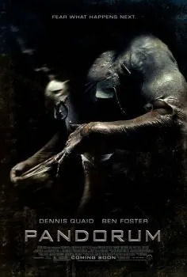

The genetics
Genetics provides the film's monsters. The hunters are the descendants of colonists exposed to a treatment, described as an enzyme, that was meant to help them adapt to the new planet; after centuries in the closed environment of the ship, it has driven an accelerated evolution that produced a cannibalistic, predatory form of human. The idea combines two themes: the hubris of engineering humans in advance for an unknown environment, and the fear that evolution, once accelerated, might not lead towards anything resembling progress. The scientists who designed the treatment never appear, and the horror lies in its unintended consequences rather than in a villainous researcher. As biology the premise is fanciful: evolution acts on populations through selection over many generations, and no single treatment could steer a population towards a new form in a few hundred years, let alone within a lifetime. The film treats the mutants mainly as a horror device in a story about isolation and madness.
The story
With Earth exhausted by overpopulation, the ship Elysium carries 60,000 colonists in hypersleep on a 123-year voyage to Tanis, an Earth-like planet. Corporal Bower and Lieutenant Payton wake with partial amnesia in a dark, apparently abandoned section of the ship. While Payton guides him by radio, Bower crawls through the ducts towards the reactor and meets other survivors, Nadia and Manh, as they evade cannibalistic humanoid hunters. A survivor, Leland, explains that years earlier a crew member, Gallo, went mad with "pandorum", a deep-space psychosis, after learning that Earth had been destroyed, and that the hunters descend from passengers changed by an enzyme meant to help them adapt to Tanis. "Payton" turns out to be an aged Gallo. Bower restarts the reactor and learns that 923 years have passed and that the ship lies on the ocean floor of Tanis. Bower and Nadia escape in a hypersleep pod, and the remaining 1,211 pods rise to the surface.